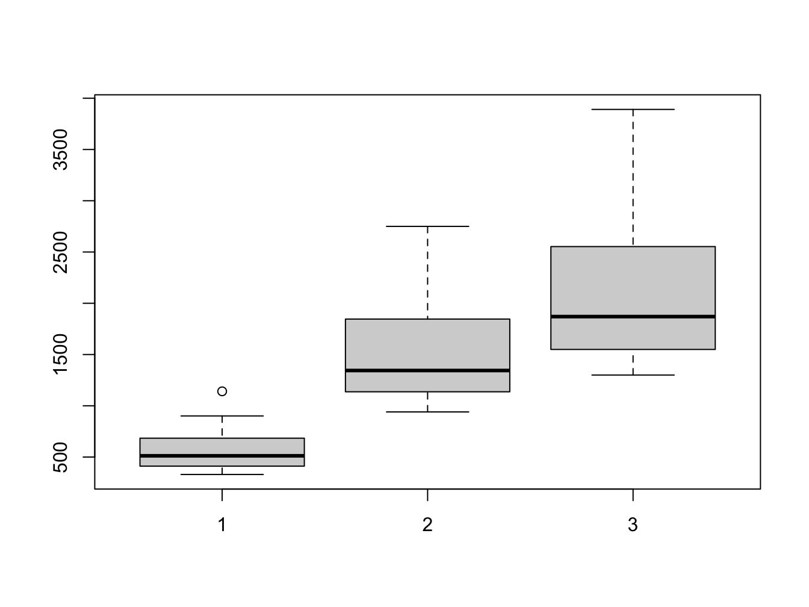
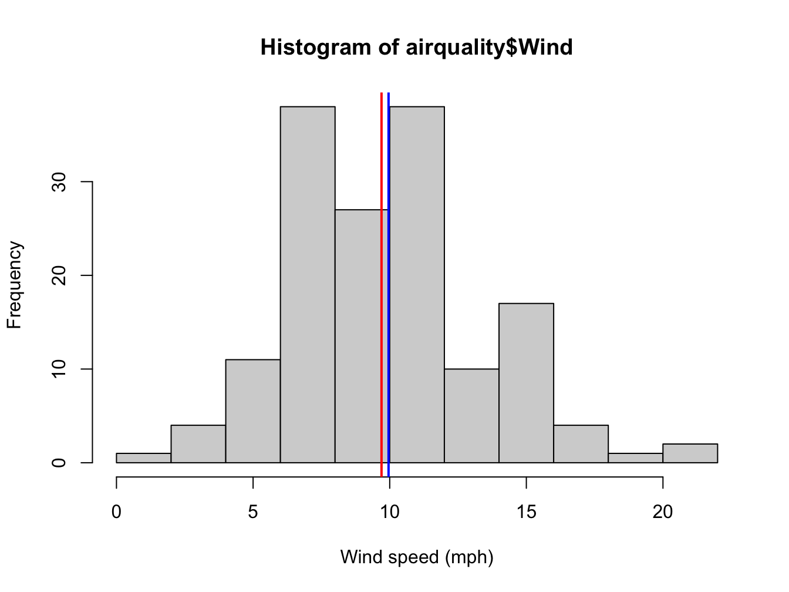
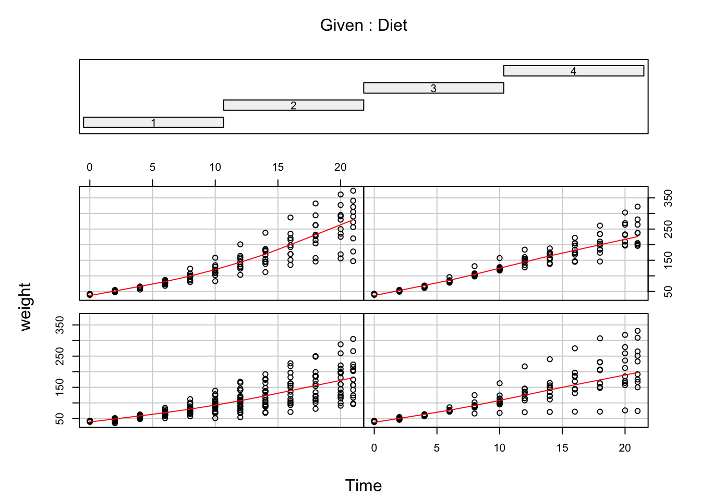

Chapter 11 Exercise solutions
#this is for rounding numbers in this session
options(digits=3)11.1 Toolbox
11.1.1 Get set up
No solution for this one.
11.1.2 Résumé
No solution for this one.
11.2 Basic R
11.2.1 Math in the console
31 + 11
66 - 24
126 / 3
12^2
256**0.5
(3 * (4 + 8^0.5))/(5^3)## [1] 42
## [1] 42
## [1] 42
## [1] 144
## [1] 16
## [1] 0.16411.2.2 First look at functions
A
Answer: paste() and paste0(). The difference lies in the separator, which is an empty string in paste0() and one space in paste(). Moreover, the separator can be configured in paste() using the sep = parameter.
paste("welcome ", "to ", "R", sep = "")## [1] "welcome to R"paste0("welcome ", "to ", "R")## [1] "welcome to R"B
Answer: abs() returns the absolute value. Simply put, a number with the minus sign removed if present.
abs(-20)## [1] 20abs(20)## [1] 20C
Answer: it combines (concatenates) its arguments into a single vector. The first example creates a “character” (text data) and the second a “numeric” (numeric data).
c(1, 2, "a")## [1] "1" "2" "a"class(c(1, 2, "a"))## [1] "character"c(1, 2, 3)## [1] 1 2 3class(c(1, 2, 3))## [1] "numeric"D
#install it. Note the quotes
install.packages("RColorBrewer")
#load it into your session. Note the absence of quotes
library(RColorBrewer)11.2.3 Variables
x <- 20
y <- 10
z <- 3
x + y## [1] 30x^z## [1] 8000#OR
#x**z
q <- x * y * z
sqrt(q)## [1] 24.5q/pi## [1] 191log10(x * y)## [1] 2.311.2.4 Vectors
Circles
The circumference of a circle is \(2\pi\cdot r\), its surface \(4\pi \cdot r^2\) and its volume \(4/3 \pi\cdot r^3\). Given this vector of circle radiuses,
radiuses <- c(0, 1, 2, pi, 4)A
Calculate their cirumference.
2 * pi * radiuses## [1] 0.00 6.28 12.57 19.74 25.13B
Calculate their surface.
4 * pi * radiuses^2## [1] 0.0 12.6 50.3 124.0 201.1C
Calculate their volume.
4/3 * pi * radiuses^3## [1] 0.00 4.19 33.51 129.88 268.08Creating vectors
Create the following vectors, as efficiently as possible. The functions rep(), seq() and paste0() and the colon operator : can be used, in any combination.
A
[1] 1 2 5 1 2 5
rep(c(1, 2, 5), times = 2)## [1] 1 2 5 1 2 5B
[1] 9 9 9 8 8 8 7 7 7 6 6 6 5 5 5
rep(9:5, each = 3)## [1] 9 9 9 8 8 8 7 7 7 6 6 6 5 5 5C
[1] 1 1 1 4 4 4 9 9 9 1 1 1 4 4 4 9 9 9
rep(c(1, 4, 9), times = 2, each = 3)## [1] 1 1 1 4 4 4 9 9 9 1 1 1 4 4 4 9 9 9D
[1] "1a" "2b" "3c" "4d" "5e" "1a" "2b" "3c" "4d" "5e"
rep(paste0(1:5, letters[1:5]), times = 2)## [1] "1a" "2b" "3c" "4d" "5e" "1a" "2b" "3c" "4d" "5e"E
[1] "0z" "0.2y" "0.4x" "0.6w" "0.8v" "1u"
paste0(seq(from = 0, to = 1, length.out = 6), letters[26:21])## [1] "0z" "0.2y" "0.4x" "0.6w" "0.8v" "1u"F
[1] "505" "404" "303" "202" "101" "000"
paste0(5:0, 0, 5:0)## [1] "505" "404" "303" "202" "101" "000"G [Challenge]
[1] "0.5A5.0" "0.4B4.0" "0.3C3.0" "0.2D2.0" "0.1E1.0"
paste0(seq(from = 0.5, to = 0.1, by = -0.1), LETTERS[1:5], 5:1, ".0")## [1] "0.5A5.0" "0.4B4.0" "0.3C3.0" "0.2D2.0" "0.1E1.0"11.2.5 Stair walking and heart rate
#number of steps on the stairs
stair_height <- c(0, 5, 10, 15, 20, 25, 30, 35)
#heart rate after ascending the stairs
heart_rate <- c(66, 65, 67, 69, 73, 79, 86, 97)
plot(heart_rate ~ stair_height,
main = "Heart rate versus stair height",
xlab = "number of steps",
ylab = "heart rate (beats/minute)",
type = "l",
lwd = 2,
col = "blue")11.2.6 More subjects
#number of steps on the stairs
stair_height <- c(0, 5, 10, 15, 20, 25, 30, 35)
#heart rates for subjects with normal weight
heart_rate_1 <- c(66, 65, 67, 69, 73, 79, 86, 97)
heart_rate_2 <- c(61, 61, 63, 68, 74, 81, 89, 104)
#heart rates for obese subjects
heart_rate_3 <- c(58, 60, 67, 71, 78, 89, 104, 121)
heart_rate_4 <- c(69, 73, 77, 83, 88, 96, 102, 127)
plot(x = stair_height,
y = heart_rate_1,
main = "Heart rate vs stair height",
xlab = "number of steps",
ylab = "heart rate (beats/min.)",
type = "b",
lwd = 2,
col = "green",
ylim = c(55, 130))
points(x = stair_height,
y = heart_rate_2,
col = "green",
type = "b",
lwd = 2)
points(x = stair_height,
y = heart_rate_3,
col = "red",
type = "b",
lwd = 2)
points(x = stair_height,
y = heart_rate_4,
col = "red",
type = "b",
lwd = 2)
Yes! there is a better more efficient way to do this, but we have not dealt with that yet.
11.2.7 Chickens on a diet
time <- c(0, 2, 4, 6, 8, 10, 12, 14, 16, 18, 20, 21)
chick_1 <- c(42, 51, 59, 64, 76, 93, 106, 125, 149, 171, 199, 205)
chick_2 <- c(40, 49, 58, 72, 84, 103, 122, 138, 162, 187, 209, 215)
chick_3 <- c(42, 53, 62, 73, 85, 102, 123, 138, 170, 204, 235, 256)
chick_4 <- c(41, 49, 61, 74, 98, 109, 128, 154, 192, 232, 280, 290)
plot(x = time, y = chick_1,
type = "l",
lwd = 2,
col = "blue",
ylim = c(40, 300))
points(x = time, y = chick_2,
type = "l",
lwd = 2,
lty = 3,
col = "blue")
points(x = time, y = chick_3,
type = "l",
lwd = 2,
lty = 1,
col = "red")
points(x = time, y = chick_4,
type = "l",
lwd = 2,
lty = 3,
col = "red")
11.2.8 Chicken bar plot
maxima <- c(max(chick_1), max(chick_2), max(chick_3), max(chick_4))
barplot(maxima,
names = c("Chick 1","Chick 2","Chick 3","Chick 4"),
ylab = "Maximum weight (grams)",
col = "gold",
main = "Maximum chick weights")11.2.9 Discoveries
A
barplot(table(discoveries),
main = "great discoveries per year",
xlab = "number of discoveries",
ylab = "frequency",
col = "green")B
summary(discoveries)C
plot(discoveries,
xlab = "year",
ylab = "number of discoveries",
main = "Great discoveries",
col = "blue",
lwd = 2)
11.2.10 Lung cancer
A
total.col <- "red"
m.col <- "blue"
f.col <- "green"
plot(ldeaths,
main = "deaths from lung cancer",
xlab = "year",
ylab = "number",
col = total.col,
ylim = c(0, 4000),
lwd = 2
)
lines(fdeaths, col = f.col, lwd = 2)
lines(mdeaths, col = m.col, lwd = 2)
legend(
"topleft",
legend = c("total", "female", "male"),
col = c(total.col, f.col, m.col),
lty = 1)
B
boxplot(
fdeaths, mdeaths, ldeaths
)
ANSWER: You can see a single outlier in the fdeaths set. We can identify the year by finding out when this occurred:
max(fdeaths) ## 1141## [1] 1141which(fdeaths == max(fdeaths)) ## index 26## [1] 26fdeaths## Jan Feb Mar Apr May Jun Jul Aug Sep Oct Nov Dec
## 1974 901 689 827 677 522 406 441 393 387 582 578 666
## 1975 830 752 785 664 467 438 421 412 343 440 531 771
## 1976 767 1141 896 532 447 420 376 330 357 445 546 764
## 1977 862 660 663 643 502 392 411 348 387 385 411 638
## 1978 796 853 737 546 530 446 431 362 387 430 425 679
## 1979 821 785 727 612 478 429 405 379 393 411 487 574So this was February 1976. A quick Google search turned up a pdf document “CDC Influenza Surveillance” that states
“The 1975-1976 influenza season was noteworthy because of several events. a) An H3N2 influenza virus (A/Victoria/3/75), isolated first in April 1975, caused a wide- spread epidemic late in the influenza season in the United States. Based on pneumonia- and influenza-associated mortality which peaked in February and March 1976, this was the most severe epidemic experienced by the United States since the 1968-1969 Hong Kong epidemic.”
As you may know, (lung) cancer patients are especially vulnerable for influenza infections.
11.3 Complex datatypes
11.3.1 Creating factors
A
animal_risk <- c(2, 4, 1, 1, 2, 4, 1, 4, 1, 1, 2, 1)
animal_risk_factor <- factor(x = animal_risk,
levels = c(1, 2, 3, 4),
labels = c("harmless", "risky", "dangerous", "deadly"),
ordered = TRUE)
barplot(table(animal_risk_factor))B
set.seed(1234)
wealth_male <- sample(x = letters[1:4],
size = 1000,
replace= TRUE,
prob = c(0.7, 0.17, 0.12, 0.01))
wealth_female <- sample(x = letters[1:4],
size = 1000,
replace= TRUE,
prob = c(0.8, 0.15, 0.497, 0.003))
wealth_labels <- c("poor", "middle class", "wealthy", "rich")
wealth_male_f <- factor(x = wealth_male,
levels = letters[1:4],
labels = wealth_labels,
ordered = TRUE)
wealth_female_f <- factor(x = wealth_female,
levels = letters[1:4],
labels = wealth_labels,
ordered = TRUE)
#combine
wealth_all_f <- factor(c(wealth_male_f, wealth_female_f),
levels = 1:4,
labels = wealth_labels,
ordered = TRUE)
prop.table(table(wealth_all_f)) * 100## wealth_all_f
## poor middle class wealthy rich
## 63.65 12.45 23.35 0.55#getting this data right may be a bit of a challenge...
bar_data <- rbind(table(wealth_female_f), table(wealth_male_f))
rownames(bar_data) <- c("female", "male")
barplot(bar_data, beside = T, legend = rownames(bar_data))11.3.2 A dictionary with a named vector
A
codons <- c("G", "P", "K", "S")
names(codons) <- c("GGA", "CCU", "AAA", "AGU")
my_DNA <- "GGACCUAAAAGU"
my_prot <- ""
for (i in seq(from = 1, to = nchar(my_DNA), by = 3)) {
codon <- substr(my_DNA, i, i+2)
my_prot <- paste0(my_prot, codons[codon])
}
print(my_prot)## [1] "GPKS"B
nuc_weights <- c(491.2, 467.2, 507.2, 482.2)
names(nuc_weights) <- c('A', 'C', 'G', 'U')
mol_weight <- 0
for (i in 1:nchar(my_DNA)) {
nuc <- substr(my_DNA, i, i);
print(nuc)
mol_weight <- mol_weight + nuc_weights[nuc]
}
mol_weight11.3.3 Airquality
A
plot(airquality$Solar.R, airquality$Temp,
main = "Temperature as a function of Solar radiation",
xlab = "Solar radiation (lang)",
ylab = "Temperature (F)")
abline(lm(airquality$Temp ~ airquality$Solar.R), col = "blue", lwd = 2)
B
with(datasets::airquality, {
m <- factor(Month, levels = 5:9, labels = month.abb[5:9])
boxplot(Temp ~ m,
main = "Temperature over the months",
xlab = "Month",
ylab = "Temperature (F)")})
C
#first create Temp Celcius column:
#(°F - 32) x 5/9 = °C
airquality$Temp.C <- (airquality$Temp - 32) * 5/9
#get the required data
airquality[airquality$Temp.C == min(airquality$Temp.C), c("Temp.C", "Month", "Day")]## Temp.C Month Day
## 5 13.3 May 5D
hist(airquality$Wind, xlab = "Wind speed (mph)")
abline(v = mean(airquality$Wind), col = "blue", lwd = 2)
abline(v = median(airquality$Wind), col = "red", lwd = 2)
E
##remove temp celcius agan
airquality$Temp.C <- NULL
pairs(airquality, panel = panel.smooth)
Calculate pairwise correlation.
cor(na.omit(airquality))The Ozone~Temp pair has the strongest correlation. A scatterplot of this pair:
plot(airquality$Ozone ~ airquality$Temp,
xlab = "Temperature (F)",
ylab = "Ozone (ppb)",
col = "blue")
ozone_wind_lm <- lm(airquality$Ozone ~ airquality$Temp)
r_squared <- round(summary(ozone_wind_lm)$r.squared, 2)
abline(ozone_wind_lm, col = "red", lwd = 2)
text(x = 60, y = 125, labels = paste0("R^2 = ", r_squared))Figure 11.1: Ozone dependency on Temp
11.3.4 Bird observations
bird_obs <- read.table("data/Observations-Data-2014.csv",
sep=";",
head=T,
na.strings = "",
quote = "",
comment.char = "")A
## look at the loaded data structure
str(bird_obs)Apparently, all variables are loaded as a factor; also the Date.start, Date.end (should be dates of course), Number (should be integer) and Notes (should be character) columns. In the original column names there are spaces and these are replaced by dots. First column Species.. is a serial number and the second Species is the English species name.
B
nrow(bird_obs)C
class(bird_obs$Number)D
bird_obs$Count <- as.integer(bird_obs$Number)
head(bird_obs[, c(4, 8, 14)], n=50)## Common.name Number Count
## 1 Greater White-fronted Goose 1 1
## 2 Greater White-fronted Goose 6 58
## 3 Greater White-fronted Goose 1 1
## 4 Greater White-fronted Goose 1 1
## 5 Greater White-fronted Goose 2 22
## 6 Snow Goose 1 1
## 7 Ross's Goose 1 1
## 8 Ross's Goose 1 1
## 9 Ross's Goose 1 1
## 10 Ross's Goose 1 1
## 11 Brant 3-6 41
## 12 Brant 1 1
## 13 Brant 300 43
## 14 Brant 1 1
## 15 Brant 3 36
## 16 Brant 2 22
## 17 Brant 9 68
## 18 Cackling Goose 3 36
## 19 Cackling Goose 1 1
## 20 Cackling Goose 1 1
## 21 Cackling Goose 1 1
## 22 Cackling Goose 1 1
## 23 Cackling Goose 3 36
## 24 Trumpeter Swan 6 58
## 25 Tundra Swan 2 22
## 26 Tundra Swan 1 1
## 27 Tundra Swan 2 22
## 28 Tundra Swan 3 36
## 29 Tundra Swan 2 22
## 30 Tundra Swan 1 1
## 31 Tundra Swan 3 36
## 32 Tundra Swan 1 1
## 33 Tundra Swan 145 16
## 34 Tundra Swan 6 58
## 35 Tundra Swan 18 21
## 36 Tundra Swan 3 36
## 37 Wood Duck 1 1
## 38 Gadwall 2 22
## 39 Gadwall 3 36
## 40 Gadwall 1 1
## 41 Eurasian Wigeon 1 1
## 42 American Wigeon 2 22
## 43 American Wigeon 3 36
## 44 American Wigeon 1 1
## 45 American Wigeon 1 1
## 46 American Wigeon 1-2 2
## 47 American Wigeon 2-5 27
## 48 Blue-winged Teal 3 36
## 49 Blue-winged Teal 1 1
## 50 Blue-winged Teal 1 1The factor levels have been converted into integers, not the original values!
E
#best is to get it right from the start: read with as.is argument
bird_obs <- read.table("data/Observations-Data-2014.csv",
sep=";",
head=T,
na.strings = "",
quote = "",
comment.char = "",
as.is = c(1, 6, 7, 8, 13))
str(bird_obs)## 'data.frame': 2019 obs. of 13 variables:
## $ Species.. : chr "4" "4" "4" "4" ...
## $ Genus : Factor w/ 166 levels "Accipiter","Agelaius",..: 8 8 8 8 8 38 38 38 38 38 ...
## $ Species : Factor w/ 300 levels "aalge","acuta",..: 11 11 11 11 11 42 235 235 235 235 ...
## $ Common.name: Factor w/ 329 levels "Acorn Woodpecker",..: 121 121 121 121 121 266 239 239 239 239 ...
## $ CBRC.Review: Factor w/ 3 levels "FALSE","N","Y": 2 2 2 2 2 2 2 2 2 2 ...
## $ Date.start : chr "3-Jun-14" "28-Jul-14" "1-Sep-14" "2-Sep-14" ...
## $ Date.end : chr "19-Jun-14" NA NA NA ...
## $ Number : chr "1" "6" "1" "1" ...
## $ Location : Factor w/ 980 levels " Coyote Creek Trail San Jose",..: 629 639 169 503 28 673 503 503 420 420 ...
## $ County : Factor w/ 9 levels "Alameda","Contra Costa",..: 7 4 9 9 3 9 9 9 4 4 ...
## $ Observer.1 : Factor w/ 692 levels "A Sojourner",..: 216 351 544 623 333 623 623 623 323 206 ...
## $ Other.Obs : Factor w/ 157 levels "Aaron Maizlish",..: NA NA NA NA NA NA NA NA 155 NA ...
## $ Notes : chr "Adult bird seen on golf course grounds with Canada geese!" "Saw 6 along the shoreline of Napa Creek in mid-afternoon. About 10 Mallards also swimming nearby and a Caspia"| __truncated__ NA "This is the only bird that matches up with what I saw. Canada like goose, snow white bum prominent, coloring sl"| __truncated__ ...##alternatively, convert it after loading:
#bird_obs$Count <- as.numeric(as.character(bird_obs$Number))Convert Number column to Count of integers.
bird_obs$Count <- as.integer(bird_obs$Number)## Warning: NAs introduced by coercionNote that there are other ways to achieve this, e.g. the colClasses argument to read.table().
F
head(bird_obs[, c(4, 8, 14)], n=50)
sum(is.na(bird_obs$Count))G
#What is the maximum number of birds in a single sighting?
bird_obs[bird_obs$Count == max(bird_obs$Count, na.rm = T), ]
##OR
bird_obs[!is.na(bird_obs$Count) & bird_obs$Count == max(bird_obs$Count, na.rm = T), ]
#What is the mean sighting count
mean(bird_obs$Count, na.rm = T)
#What is the median of the sighting count
median(bird_obs$Count, na.rm = T)H
hist(bird_obs$Count)Not very helpful, now is it? Try fiddling with the breaks argument.
plot(density(bird_obs$Count, na.rm=T),
main = "density of Counts")
Better results with a log transformation (and some coloring)
d <- density(log(bird_obs$Count), na.rm=T)
plot(d, main = "density of log-transformed Counts")
polygon(d, col = "red", border = "blue")The Shapiro test gives us a numeric indication of the fit to a normal distribution:
shapiro.test(bird_obs$Count)##
## Shapiro-Wilk normality test
##
## data: bird_obs$Count
## W = 0.01, p-value <2e-16The P-value -way below 0.05- indicates this is not a normal distribution. But we’ve seen that already of course.
I
#How many different species were recorded?
length(unique(bird_obs$Common.name))
#How many genera do they constitute?
length(unique(bird_obs$Genus))
#What species from the genus "Puffinus" have been observed?
#the actual sightings
bird_obs[bird_obs$Genus == "Puffinus", c(2, 3, 4, 6, 14)]
#the species
unique(bird_obs[bird_obs$Genus == "Puffinus", "Common.name"])The challenge
common_names <- unique(bird_obs$Common.name)
scientific_names <- unique(paste0(bird_obs$Genus, " ", bird_obs$Species))
paste0("number of common names: ", length(common_names), "; number of scientific names: ", length(scientific_names))## [1] "number of common names: 330; number of scientific names: 325"So there is something fishy going on. My guess is that one more species has two common names for two subspecies where, of course, there will be only one scientific species name. Which? Dunno. Can you find out?
OK, I couldn’t help myself. I do NOT expect you to be able to do serious mangling like this at the end of this course!
scientific_all <- paste0(bird_obs$Genus, " ", bird_obs$Species)
##combine scientific and common andf make unique
combined <- unique(paste0(scientific_all, ":", bird_obs$Common.name))
#split it again, and convert to dataframe (strsplit gives a list)
combined_split <- strsplit(x = combined, split = ":")## Warning in strsplit(x = combined, split = ":"): input string 189 is invalid
## in this localecombined_split <- as.data.frame(do.call(rbind, combined_split))
#count frequencies of Scinetific names
combined_split_table <- as.data.frame(table(combined_split[,1]))
#where is the count above 1?
combined_split_table[combined_split_table$Freq > 1, ]## Var1 Freq
## 25 Asio flammeus 2
## 85 Clangula hyemalis 2
## 225 Pterodroma ultima 2
## 292 Tachycineta bicolor 2
## 305 Tyrannus melancholicus 2And which are tehse as Common Name?
species_sel <- combined_split_table[combined_split_table$Freq > 1, ]$Var1
species_sel## [1] Asio flammeus Clangula hyemalis Pterodroma ultima
## [4] Tachycineta bicolor Tyrannus melancholicus
## 325 Levels: Accipiter gentilis Accipiter striatus ... Zonotrichia querulacombined_split[combined_split$V1 %in% species_sel, ]## V1 V2
## 27 Clangula hyemalis Long-tailed Duck
## 28 Clangula hyemalis long-tailed duck
## 45 Pterodroma ultima Murphy's Petrel
## 46 Pterodroma ultima Mute Swan
## 160 Asio flammeus Short-eared Owl
## 161 Asio flammeus short-eared owl
## 201 Tyrannus melancholicus Tropical Kingbird
## 202 Tyrannus melancholicus tropical kingbird
## 220 Tachycineta bicolor Clark's Nutcracker
## 223 Tachycineta bicolor Tree SwallowAhhh simple typos, for 3 out of 5, and data entering errors: The cause of so many data analysis problems. Scientific name Pterodroma ultima is certainly not that of the Mute Swan: a data entering error, and the same counts for Tachycineta bicolor: it is the name of the Tree Swallow.
J
#these are the values that need to be rescued:
table(bird_obs[is.na(bird_obs$Count), "Number"])
#I suggest you take the lowest of the range-like values:
#1-3 becomes 1; 2-3 becomes 2; 100s becomes 100 etc
#then do something like
tmp <- bird_obs$Number[1:50]
tmp
gsub("(\\d+)-(\\d+)", "\\1", tmp)11.4 Regular Expressions
11.4.1 Restriction enzymes
A
pacI_re <- "TTAATTAA"
patterns <- c("T{2}A{2}T{2}A{2}",
"(TTAA){2}",
"(T{2}A{2}){2}")
for(ptrn in patterns){
print(grepl(ptrn, pacI_re))
}B
sfiI_re <- "GGCCACGTAGGCC"
patterns <- c("G{2}C{2}[GATC]{5}G{2}C{2}",
"GGCC[GATC]{5}GGCC",
"[GC]{4}[GATC]{5}[GC]{4}") #last one is less specific!
for(ptrn in patterns){
print(grepl(ptrn, sfiI_re))
}11.4.2 Prosite Patterns
A
PS00211:
“[LIVMFYC]-[SA]-[SAPGLVFYKQH]-G-[DENQMW]-[KRQASPCLIMFW]-[KRNQSTAVM]-[KRACLVM]-[LIVMFYPAN]-{PHY}-[LIVMFW]-[SAGCLIVP]-{FYWHP}-{KRHP}-[LIVMFYWSTA].”
PS00211<- "[LIVMFYC][SA][SAPGLVFYKQH]G[DENQMW][KRQASPCLIMFW][KRNQSTAVM][KRACLVM][LIVMFYPAN][^PHY][LIVMFW][SAGCLIVP][^FYWHP][^KRHP][LIVMFYWSTA]"B
PS00018:
“D-{W}-[DNS]-{ILVFYW}-[DENSTG]-[DNQGHRK]-{GP}-[LIVMC]-[DENQSTAGC]-x(2)- [DE]-[LIVMFYW].”
PS00018 <- "D[^W][DNS][^ILVFYW][DENSTG][DNQGHRK][^GP][LIVMC][DENQSTAGC].{2} [DE][LIVMFYW]"11.4.3 Fasta Headers
library(stringr)
fasta_headers <- readLines("./data/fasta_headers.txt")A
str_match(fasta_headers, "\\[(.+)\\]")[, 2]
str_match(fasta_headers, "\\[([[:alpha:]]+ [[:alpha:]]+) ?(.+)?\\]")[, 2]B
str_match(fasta_headers, ">([[:alpha:]]{2,3}\\|\\w+)\\|")[, 2]C
str_match(fasta_headers, ">.+\\| (.+?) \\[")[, 2]11.5 Scripting
11.5.1 Illegal reproductions
The mean
my_mean <- function(x) {
sum(x, na.rm = T) / length(x)
}Standard deviation
my_sd <- function(x) {
sqrt(sum((x - mean(x))^2)/(length(x)-1))
}Median
my_median <- function(x) {
sorted <- sort(x)
if(length(x) %% 2 == 1) {
#uneven length
my_median <- sorted[ceiling(length(x)/2)]
} else {
my_median <- (sorted[length(x)/2] + sorted[(length(x)/2)+1]) / 2
}
return(my_median)
}11.5.2 Interquantile ranges
interquantile_range <- function(x, lower = 0, upper = 1) {
if (! is.numeric(x) |
! is.numeric(lower) |
! is.numeric(upper)) {
stop("all three arguments should be numeric")
}
lower_val <- quantile(x, probs = lower)
upper_val <- quantile(x, probs = upper)
tmp <- upper_val - lower_val
#a named vector is always nice, for acces but also for display purposes
names(tmp) <- paste0(lower*100, "-", upper*100, "%")
tmp
}
tst <- rnorm(1000)
interquantile_range(tst) # 0 to 1
interquantile_range(tst, 0.25, 0.75) # custom
#interquantile_range("foo") # error!Perform some tests on the arguments to make a robust method: are all arguments numeric?
To test you method, you can compare interquantile_range(some_vector, 0.25, 0.75) with IQR(some_vector) - they should be the same.
11.5.3 Vector distance
distance <- function(p, q) {
if (! is.numeric(p) | ! is.numeric(q)) {
stop("non-numeric vectors passed")
}
if (length(p) != length(q)) {
stop("vectors have unequal length")
}
sqrt(sum((p - q)^2))
}Other distance measures
my_distance <- function(p, q, method = "euclidean") {
if (! (is.numeric(p) & is.numeric(q))) {
stop("One or both of the vectors is not numeric")
}
if (length(p) != length(q)) {
stop("Vectors are not of equal length")
}
if (method == "euclidean") {
return(sqrt(sum((p - q)^2)))
}
else if (method == "manhattan") {
return(sum(abs(p-q)))
}
else {
stop(paste0("Method not found: ", method))
}
}
my_distance(c(0,0,0), c(1, 1, 1))## [1] 1.7311.5.4 G/C percentage of DNA
GC_perc <- function(seq, strict = TRUE) {
if (is.na(seq)) {
return(NA)
}
if (length(seq) == 0) {
return(0)
}
seq.split <- strsplit(seq, "")[[1]]
gc.count <- 0
anom.count <- 0
for (n in seq.split) {
if (length(grep("[GATUCgatuc]", n)) > 0) {
if (n == "G" || n == "C") {
gc.count <- gc.count + 1
}
} else {
if (strict) {
stop(paste("Illegal character", n))
} else {
anom.count <- anom.count + 1
}
}
}
##return perc
##print(gc.count)
if (anom.count > 0) {
anom.perc <- anom.count / nchar(seq) * 100
warning(paste("Non-DNA characters have percentage of", anom.perc))
}
return(gc.count / nchar(seq) * 100)
}11.6 Function apply and its relatives
11.6.1 Whale selenium
whale_sel_url <- "https://raw.githubusercontent.com/MichielNoback/davur1/gh-pages/exercises/data/whale_selenium.txt"
whale_selenium <- read.table(whale_sel_url,
header = T,
row.names = 1)A
apply(X = whale_selenium, MARGIN = 2, FUN = mean)B
apply(X = whale_selenium, MARGIN = 2, FUN = sd)C
my.sem <- function(x) {
sem <- sd(x) / sqrt(length(x))
}
apply(X = whale_selenium, MARGIN = 2, FUN = my.sem)D
whale_selenium$ratio <- apply(X = whale_selenium,
MARGIN = 1,
FUN = function(x){
x[2] / x[1]
})
hist(whale_selenium$ratio,
xlab = "Tooth / Liver Selenium ratio",
main = "Histogram of Tooth / Liver Selenium ratios")E
Inline expressions are like this: 15.4 MpH.
11.6.2 ChickWeight
This exercise revolves around the ChickWeight dataset of the built-in datasets package.
A
#MANY WAYS TO GET THERE
length(split(ChickWeight, ChickWeight$Chick))## [1] 50#OR
sum(tapply(ChickWeight$Diet, ChickWeight$Chick, FUN = function(x){1}))## [1] 50#OR
length(unique(ChickWeight$Chick))## [1] 50#OR
nrow(aggregate(x = ChickWeight, by = list(ChickWeight$Chick), FUN = function(x){x}))## [1] 50B
aggregate(formula = weight ~ Diet, data=ChickWeight, FUN = mean, na.rm = T)## Diet weight
## 1 1 103
## 2 2 123
## 3 3 143
## 4 4 135#OR
aggregate(x = ChickWeight$weight, by = list(Diet = ChickWeight$Diet), FUN = mean, na.rm = T)## Diet x
## 1 1 103
## 2 2 123
## 3 3 143
## 4 4 135C
coplot(weight ~ Time | Diet, data = ChickWeight, panel = panel.smooth)
D
This is the “naive” solution:
#A naive for-loop here - is this the best solution?
ChickWeight$weight_gain <- NA #create the column with missing values
for (i in 1:nrow(ChickWeight)) {
#skip first row and rows that are preceded by values for another chick
if (i > 1 && ChickWeight$Chick[i] == ChickWeight$Chick[i-1]) {
ChickWeight[i, "weight_gain"] <- ChickWeight$weight[i] - ChickWeight$weight[i-1]
}
}This is the most efficient way of dealing with this in base R. Function do.call() is way out of scope for this course!
weight_gain <- function(x) {
#x is a dataframe
leaded <- c(x$weight)
lagged <- c(NA, x$weight[1:(length(x$weight)-1)])
x$gain <- leaded - lagged
x
}
split_cw <- split(x = ChickWeight, f = ChickWeight$Chick)
new_cw <- do.call(rbind, lapply(X = split_cw, FUN = weight_gain))
head(new_cw)## weight Time Chick Diet weight_gain gain
## 18.195 39 0 18 1 NA NA
## 18.196 35 2 18 1 -4 -4
## 16.176 41 0 16 1 NA NA
## 16.177 45 2 16 1 4 4
## 16.178 49 4 16 1 4 4
## 16.179 51 6 16 1 2 2E
local_file <- "ChickWeight_weight_gain.Rdata"
download.file(paste0("https://github.com/MichielNoback/davur1_gitbook/raw/master/data/", local_file), local_file)
load(local_file)
#attach
ChickWeight$weight_gain <- stored.weight.gaintapply(X = ChickWeight$weight_gain, INDEX = ChickWeight$Diet, FUN = mean, na.rm = T)
#or with aggregate
aggregate(formula = weight_gain ~ Diet, data = ChickWeight, FUN = median)
#or with split and sapply
sapply(split(ChickWeight[, "weight_gain"], ChickWeight$Diet), sd, na.rm = T)F
boxplot(weight_gain ~ Diet, data = ChickWeight)
11.6.3 Food constituents
A
foods <- read.table(
"https://raw.githubusercontent.com/MichielNoback/davur1_gitbook/master/data/food_constituents.txt", header = T)levels(foods$Type)
table(foods$Type)B
mean(foods[foods$Type == "chocolate", "kcal"])C
#aggregate over Type
mean.fat <- aggregate(formula = fat.total ~ Type, data = foods, FUN = mean)
#order and select first
mean.fat[order(mean.fat$fat.total, decreasing = T)[1], ]D
mean.energy <- aggregate(formula = kcal ~ Type, data = foods, FUN = mean)
mean.energy[order(mean.energy$kcal)[1], ]
mean.energy[order(mean.energy$kcal, decreasing = T)[1], ]E
#more verbose means possible; this efficient way demonstrating use of %in%
foods$solid.state <- !foods$Type %in% c("milk", "beverage")
boxplot(formula = carb.sugar ~ solid.state,
data = foods,
main = "Sugar content of foods categories",
names = (c("Drink", "Solid")),
ylab = "Sugar (g/100g product)")
F
\[NO WORKED SOLUTION HERE\]
11.6.4 Urine properties
urine_file_name <- "urine.csv"
url <- paste0("https://raw.githubusercontent.com/MichielNoback/datasets/master/urine/", urine_file_name)
local_name <- paste0("../", urine_file_name) #specifiy your own folder!
download.file(url = url, destfile = local_name)A
urine <- read.table(local_name,
sep = ",",
header = TRUE)B
names(urine)[2] <- "ox_crystals"
urine$ox_crystals <- factor(urine$ox_crystals, levels = c(0, 1), labels = c("no", "yes"))C
mean_sd <- function(x) {
# returns a named vector
c("mean" = round(mean(x, na.rm = T), 2),
"sd" = round(sd(x, na.rm = T), 2))
}
apply(X = urine[, 3:8], MARGIN = 2, FUN = mean_sd)## gravity ph osmo cond urea calc
## mean 1.02 6.03 615 20.90 266 4.14
## sd 0.01 0.72 238 7.95 131 3.26D
aggregate(cbind(gravity, ph, osmo, cond, urea, calc) ~ ox_crystals,
data = urine,
FUN = function(x) round(mean(x, na.rm = T), 2))## ox_crystals gravity ph osmo cond urea calc
## 1 no 1.02 6.13 562 20.6 232 2.63
## 2 yes 1.02 5.93 683 21.4 302 6.20E
pairs(urine[, 3:8])F
#install.packages("gplots")
library("gplots")##
## Attaching package: 'gplots'## The following object is masked from 'package:stats':
##
## lowesscormat <- cor(urine[, 3:8], use = "complete.obs")
heatmap.2(cormat, col = bluered(100), trace = "none", density.info = "none")G
ph_factor <- cut(urine$ph,
breaks = c(4.5, 5.5, 7.0, 8.0),
labels = c("acidic", "neutral", "basic"))
urine$ph_factor <- ph_factor
mean_median_sd <- function(x) {
# X is a dataframe!
apply(X = x[3:8],
MARGIN = 2,
FUN = function(y) {
# returns a named vector
c("mean" = round(mean(y, na.rm = T), 2),
"median" = median(y, na.rm = T),
"sd" = round(sd(y, na.rm = T), 2))
})
}
urine_split <- split(x = urine,
f = urine$ph_factor)
lapply(X = urine_split,
FUN = mean_median_sd)## $acidic
## gravity ph osmo cond urea calc
## mean 1.02 5.20 690 23.04 298 4.85
## median 1.02 5.25 730 25.30 292 3.19
## sd 0.01 0.23 227 6.52 141 4.19
##
## $neutral
## gravity ph osmo cond urea calc
## mean 1.02 6.09 605 20.12 272 4.05
## median 1.02 5.98 578 20.60 260 3.46
## sd 0.01 0.42 247 8.56 126 2.93
##
## $basic
## gravity ph osmo cond urea calc
## mean 1.01 7.51 510 21.51 155.8 3.13
## median 1.02 7.50 547 22.50 112.5 1.75
## sd 0.01 0.38 166 6.12 95.5 3.0611.6.5 Bird observations revisited
bird_obs <- read.table("data/Observations-Data-2014.csv",
sep=";",
head=T,
na.strings = "",
quote = "",
comment.char = "",
as.is = c(1, 6, 7, 8, 13))
bird_obs$Count <- as.integer(bird_obs$Number)A
c.split <- split(x = bird_obs, f = bird_obs$County)
c.counts <- sapply(c.split, nrow)
barplot(c.counts[order(c.counts, decreasing = T)],
main = "Bird observations per county",
ylab = "Observations",
las = 2)B
obs.split <- split(x = bird_obs, f = bird_obs$Observer.1)
obs.counts <- sapply(obs.split, nrow)
obs.counts <- obs.counts[obs.counts > 10]
obs.counts[order(obs.counts, decreasing = T)]C
obs.counts[order(obs.counts, decreasing = T)][1]D
g.split <- split(bird_obs, bird_obs$Genus)
g.species <- lapply(g.split, function(x) {
unique(x$Common.name)
})
#create ordering
g.species.count <- sapply(g.species, length)
g.order <- order(g.species.count, decreasing = T)
#apply order to list and select only first five
g.species[g.order[1:5]]E
bird_obs$Date.start <- as.Date(bird_obs$Date.start, format = "%d-%b-%y")
date.series <- aggregate(Count ~ Date.start, data = bird_obs, FUN = sum, na.rm = T)
#2024 is an error input, remove it
date.series <- date.series[1:nrow(date.series)-1, ]
plot(x = date.series$Date.start, y = date.series$Count, ylim = c(0, 250))